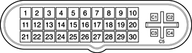

| PATH |

The connector for the digital video monitor is an Apple proprietary connector called the ADC (Apple display connector). It carries both digital and analog video signals as well as USB and control signals and power for an external monitor. Figure 3-4 shows the contact configuration; Table 3-7 and Table 3-8 list the signals and pin assignments.
The maximum current available from the 25-V supply for the external monitor is 4.0 A.
Figure 3-4 Apple display connector
| Pin | Signal name |
| C1 | Analog Blue Video |
| C2 | Analog Green Video |
| C3 | Analog Horizontal Sync |
| C4 | Analog Red Video |
| C5 | Analog RGB Return and DDC Return |
The graphics data sent to the digital monitor use transition minimized differential signaling (TMDS). TMDS uses an encoding algorithm to convert bytes of graphics data into characters that are transition-minimized to reduce EMI with copper cables and DC-balanced for transmission over fiber optic cables. The TMDS algorithm also provides robust clock recovery for greater skew tolerance with longer cables or low cost short cables. For additional information about TMDS, see the references shown in "Digital Visual Interface".